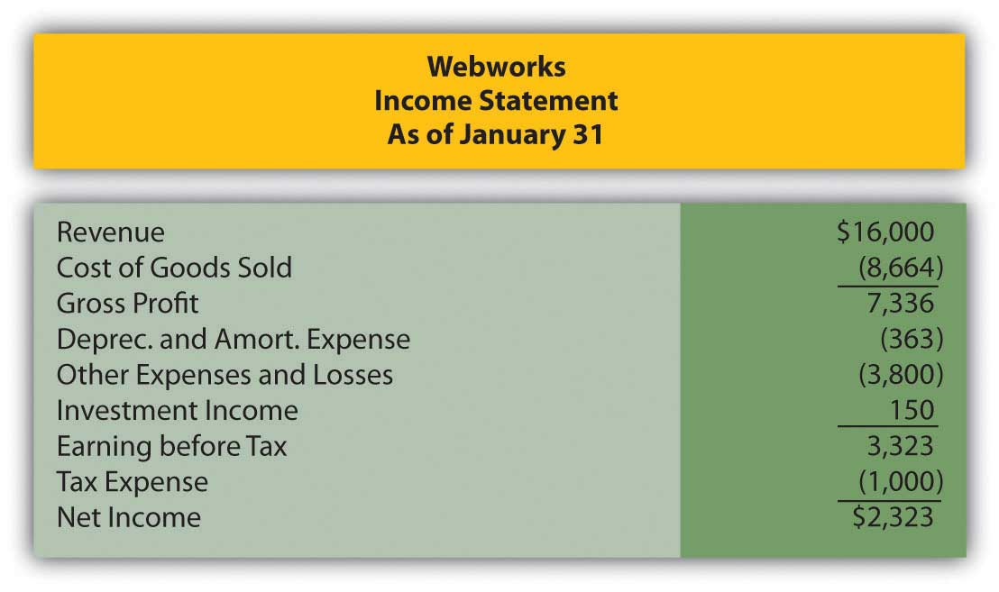
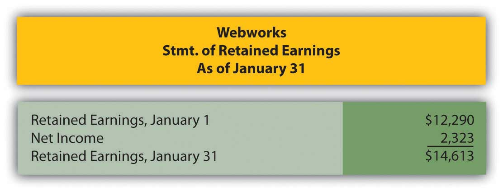
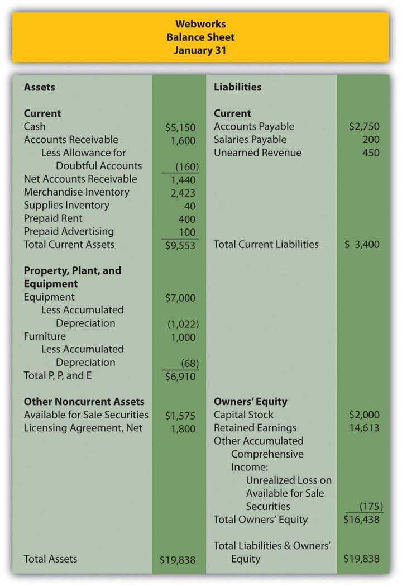

Which of the following is not a type of bond?
Kitten Inc. issued $105,000 in bonds on September 1. The annual interest rate is 6 percent and interest is paid on the bonds every June 30 and December 31. When the bonds are issued on September 1, how much cash will the company collect?
Which of the following is an agreement which debtors sign as part of getting a loan that serves to protect a creditor?
Which of the following is not a reason companies borrow money?
Which of the following refers to an asset a creditor could take from a debtor if the debtor fails to pay back a loan?
Krystal Corporation issued $100,000 with a 4 percent stated rate of interest on January 1. The effective rate of interest on that date was 6 percent and interest is paid semiannually on June 30 and December 31. The bonds mature ten years from now. What amount would bondholders be willing to pay Krystal on January 1 for the bonds?
Joni Corporation borrows $500,000 from Friendly Bank on February 1, 20X8. The principal will not be repaid until the end of six years, but interest payments are due every February 1 and August 1. The interest rate is 4 percent annually. Record the journal entry necessary for each of the following:
Colson Corporation issues bonds to finance an expansion of its hot swimwear line. The $50,000 in bonds is issued on April 1, 20X4 and pay interest in the amount of 5 percent annually. Interest payments are made semiannually, every April 1 and October 1. Record the journal entry necessary for each of the following:
Assume the same facts as in problem 2 above, but instead of issuing the bonds on April 1, 20X4, the bonds are issued on July 1, 20X4. Record the journal entry necessary for each of the following.
Keller Corporation offers a zero-coupon bond of $80,000 on January 1, 20X5. It will come due on December 31, 20X7. Potential bondholders and Keller negotiate an annual interest rate of 7 percent on the bonds.
Jaguar Corporation issues term bonds with a face value of $300,000 on January 1, 20X1. The bonds have a stated rate of interest of 7 percent and a life of four years. They pay interest annually on December 31. The market value on the date of issuance was 9 percent. Record all necessary journal entries on the following dates.
Collins Company issues term bonds with a face value of $100,000 on May 1, 20X3. The bonds have a stated rate of interest of 4 percent and a life of ten years. They pay interest semiannually on June 30 and December 31. The market value on the date of issuance was 6 percent. Record all necessary journal entries on the following dates:
Fitzgerald Corporation issues a $3,000,000 in serial bonds on August 1, 20X2. The terms are as follow:
Chyrsalys Corporation issues $4,000,000 in serial bonds on January 1, 20X5, with a stated interest rate of 3 percent. On this date, investors demand an effective interest rate of 4 percent. The bond terms specify that interest and $2,000,000 in principal will be paid on January 1, 20X6 and 20X7.
This problem will carry through several chapters, building in difficulty. It allows students to continuously practice skills and knowledge learned in previous chapters.
In Chapter 13 "In a Set of Financial Statements, What Information Is Conveyed about Current and Contingent Liabilities?", you prepared Webworks statements for January. They are included here as a starting point for February.
Figure 14.29 Webworks Financial Statements
Figure 14.30
Figure 14.31
The following events occur during February:
a. Webworks starts and completes nine more Web sites and bills clients for $5,400.
b. Webworks purchases supplies worth $150 on account.
c. At the beginning of February, Webworks had nineteen keyboards costing $117 each and ten flash drives costing $20 each. Webworks uses periodic FIFO to cost its inventory.
d. On account, Webworks purchases seventy keyboards for $118 each and one hundred of the new flash drives for $22 each.
e. On February 1, Webworks borrows $3,000 from Local Area Bank. The loan plus accrued interest will be repaid at the end of two years. The interest rate is 6 percent.
f. Webworks purchases new computer equipment for use in designing Web sites. The equipment costs $5,500 and was paid for in cash.
g. Webworks pays Nancy $800 for her work during the first three weeks of February.
h. Webworks sells seventy-five keyboards for $11,250 and ninety of the new flash drives for $2,700 cash.
i. Webworks collects $5,200 in accounts receivable.
j. Webworks purchases one hundred shares of RST Company for $18 per share in cash. This is considered a trading security.
k. Webworks pays off its salaries payable from January.
l. Webworks is hired to design Web sites for a local photographer and bakery. It is paid $600 in advance.
m. Webworks pays off $11,300 of its accounts payable.
n. Webworks pays Leon a salary of $2,000.
o. Webworks completes the salon Web site and earns the $450 paid in January.
p. RST Company pays Webworks a dividend of $25.
q. Webworks pays taxes of $1,558 in cash.
Required:
A. Prepare journal entries for the above events.
B. Post the journal entries to T-accounts.
C. Prepare an unadjusted trial balance for Webworks for February.
D. Prepare adjusting entries for the following and post them to your T-accounts.
r. Webworks owes Nancy $220 for her work during the last week of February.
s. Leon’s parents let him know that Webworks owes $300 toward the electricity bill. Webworks will pay them in March.
t. Webworks determines that it has $70 worth of supplies remaining at the end of January.
u. Prepaid rent should be adjusted for February’s portion.
v. Prepaid advertising should be adjusted for February’s portion.
w. Webworks is continuing to accrue bad debts at 10 percent of accounts receivable.
x. Webworks continues to depreciate its equipment over four years and its furniture over five years, using the straight-line method. The new equipment will also be depreciated over five years using the straight-line method.
y. The license agreement should be amortized over its one-year life.
z. QRS Company is selling for $12 per share and RST is selling for $16 per share on February 28.
i. Interest should be accrued for February.
ii. Record cost of goods sold.
E. Prepare an adjusted trial balance.
F. Prepare financial statements for February.